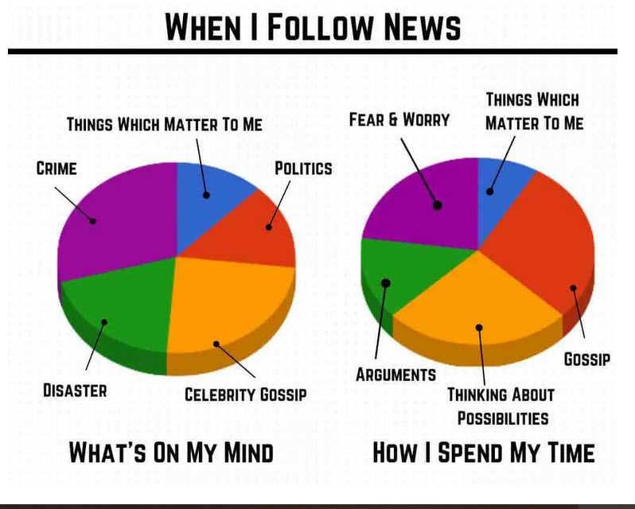
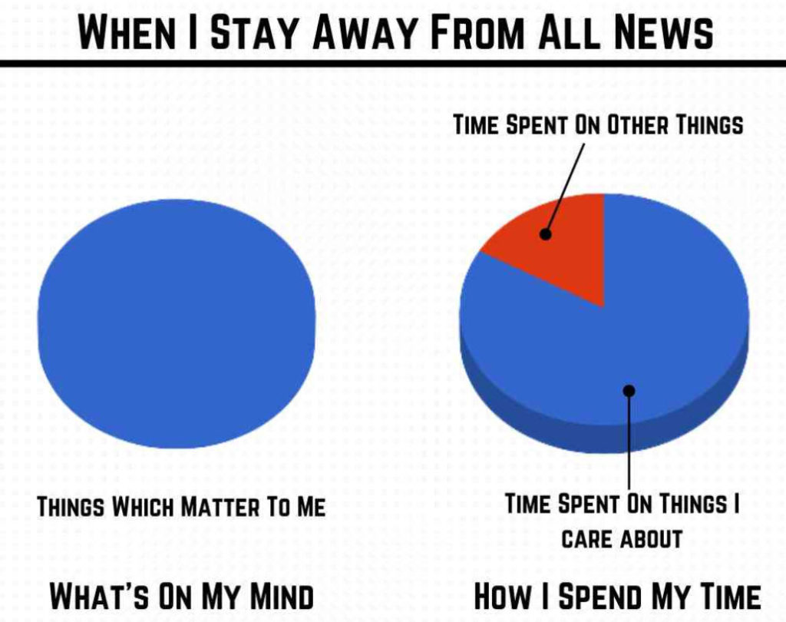
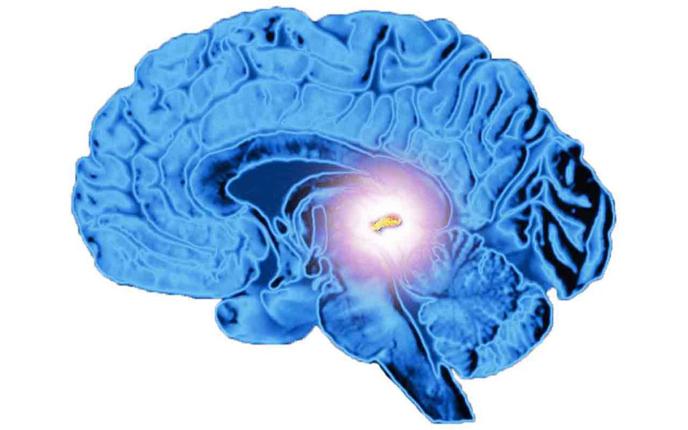

Well, I have been so busy lately that I have forgotten to deal with some of my other sub categories. Here is something for the FAQ Index. It’s just a collection of unsorted Q&A that I’ve accumulated over the last year or so. I think you all might find one or two answers of interest.
Some questions and comments are in regards to my experiences in retirement, some are in regards to slides and mission parameters. Some are in regards to spiritual beings and the non-physical reality, and some are just all over the place. maybe there is something for you all to chew on.
I put forth the questions anonymously.
If you are reading this and see your questions please do not be alarmed or insulted. I put them here simply because you are not the only one. I have others, with situations very similar to yours asking the same kinds of questions. Seriously.
This is my way to make it easier for everyone to pull together and work together.
And if you are reading these Q&A and want to comment, please do so in the comment section and refer to the specific question (Question 4a…etc.). This way we all can participate in helping each other out just like a real Rufus does. Just like what and who you are.
Question 1
Can you remember any “slides” where the earth was empty of people, you were all alone on planet earth during your mission?
I have a feeling that the “elites” are getting ready to “thin the herd” of humanity, I understand that they want to get rid of around 90% of humanity so they can have the entire place to themselves (YIKES!!!)
Answer 1
Now that you mention it, there were times when things seemed really “empty”. It would be maybe 4 in the afternoon on a weekend. Normally, where I lived at that time (in a trailer park) there would be all sorts of activity. Kids would be playing. Lawnmowers would be non-stop noise makers. Cars would come and go. But for some reason it would be ghostly quiet.
No big deal, you brush it off. You say “Well, maybe there is something going on. Like a school event, a game, or something.”
And then you drive into town and most of the fast food franchises are closed. Again, you brush it off. You say “it must be a local holiday or something”.
Few people on the roads. No one on the sidewalk. But still, the dogs still bark. The birds still sing. The one thing that strikes me (now that I think about it) was that many lawns really needed to be mowed. Not only was the grass tall, but there were long weeds sprouting up in most of them. But aside from that, it was like a quiet day at 5:00 in the morning. Not too much activity at all.
I don’t recall anything on the “news”, but at that time (in my life) I was just listening to cassettes in the car. My own family was normal. Wife and cats were just fine. And then later on around 7pm I slid to a new reality, and the world “woke up” and came alive again.
I cannot definitively state that there was a depopulated world-line reality. But then at the time it could have been. I just never looked at it that way.
Question 2
What do you think the aliens were trying to accomplish through you, their agenda (as it were)?
Are you SURE they were not also agents of The Devil, how did they smell?
Answer 2
Well, for starters there are numerous extraterrestrial species involved in the earth. Some of the extraterrestrials actually “own” the earth, and are supported by other terrestrial species that we do not recognize as such.
In general, though, I am not sure about anything.
I feel a neutral level of respect that emanates from them. I myself, personally have a great deal of affection towards them. As far as smell, I haven’t really noticed anything worthy of note. But then again, at the times when I was interacting with them personally, my senses were so overloaded with sensory stimulus and new experiences that it would be pretty easy to overlook something like a scent.
Question 3
This question is in regards to a slide to a world-line where people were dying.
Interesting, since Rush was alive in that time-frame, we can probably assume it was a jump into the recent past, (you know he died in February, right?). Maybe Covid took hold of humanity more severely in that reference frame than it did in ours, who knows?
The whole bat soup thing is just a bunch of BS to cover the actual story, namely the intentional release of the thing by the CCP, that’s my analysis. They had sick people loaded onto airliners going all over the world in late 2019, bat soup accident my ass!
Back here at home, things are weird, nobody really knows who’s in charge. Biden is too feeble, Harris is a nut (The Scarecrow and the Joker I call them) and Rice and 0bama are running things from behind the scenes. People have mostly tuned out and are trying to go about their business best they can, you know, like they always do(?).
Answer 3
Yeah, well, the slides were always a mix of the culture AT THAT TIME with other elements that were alien to it. Well, the slide took place in the 1990’s so El Rushbo was still alive then, and I used to listen to him then. So yeah, he was going on and on…
Slides are not like time-travel. You just kind of go into a different reality that is contemporaneous with your departure point (world-line).
The “sickly reality” that I experienced (in many ways) resembles a sort of mix of 1995, 2020 and something else much different. It doesn’t mean that I had an image of the future, it’s just that certain events that seem to be scheduled for decades away, seem to be placed in my (then) present reality.
Other things just didn’t make sense to me. Like the shortage of masks (in October), or my car no longer using a key to start it! At the time, these things were very odd and very startling. The slide at that particular time was a pretty long one, and went for much of the day. It was a working week-day. And the office didn’t change much. Just a lot of really sickly co-workers, and general silence in the office.
At that time in my life, the slides tended to be of rapid cycle. And so it was “normal” for me to cycle in and out of unusual things. Like the “Denny’s” restaurant chain having a drive through window, or my vacuum cleaner having a hose instead of a stand-up model. After a while you just get used to the changes, and you roll with them. It becomes normal.
The ones I remember are the ones that stuck in my head.
Question 4
You know, I’ve been thinking a lot lately about that “jump” you made into the world where everybody was either sick or dying.
Consider that the mRNA vaccine (if effective, big IF) will cause your cells to produce the antigens inside your body for corona/SARs viruses so that no antibodies will be produced if you should become infected from another one, resulting in it killing you.
The Covid vaccine will DELETE your immunity towards corona viruses so that the next “accidental” pandemic release wipes out all the share of the population that got the vax. Then they’ll do the same thing over again.
What do you remember seeing during that “jump” it would probably be useful to know any other snippets of info you might have remembered about that one?
Answer 4
Good question. Gosh that (event) was a long time ago.
I well remember that I thought that it was a bio-weapon attack, but I was confused because no one was talking about an attack at all. And the people just looked sickly. There weren’t any bumps, rashes or anything like that.
In my mind, a bio-weapon event would look like small-pox, measles, or Scarlet fever.
I felt “heavy” like I was well winded, and my chest felt like cement.
Everything else was normal. The radio worked and the stations were the same. There was a greater number of stores closed than what I would normally expect. Maybe about one in three were closed. The roads had less traffic, and no one was walking on the streets. The office was quiet. People were in their cubicles. The parking lot was unusually emptier. Not vacant, but maybe about 70% full. For the most part everything seemed normal.
The news was about some sports figure dying in an airplane crash. El’ Rushbo was talking about the evil bat soup slurping Chinese (which is strange as the Chinese don’t eat bat soup).
The people dressed slightly differently. More sport-shoes instead of loafers. Open collars instead of ties. But nothing to really say it was all that different. The office coffee machine was there and running normally. I think that I made a pot of regular coffee for the group. No donuts on the table though. At that time, I would say that maybe 3 out of ten days would be some kind of donuts for the group to eat with the coffee.
I guess that you could say that everything seemed like a normal everyday work day. The only thing was that everyone seemed to be very sickly, weak and very, very tired. Including myself. It was a struggle to get up out of the chair. A struggle to walk to the car. A struggle to place an order at the drive through, and a lack of desire to eat what I ordered.
I do remember drinking more coffee than I usually would. I liked the hot warmth and the energy that it seemed to give me.
Question 5
I still don’t understand why China is not defending itself against the conclusion and dissemination of ALL US-based analysts that the virus “leaked” from the Wuhan lab.
And if it had, then what do you make of all the preparations in place by the Gates, WHO, etc just before this “leak”. Are they genies who looked into the bottle?
There is no logic in all this. Are they pretty soon going to start teaching our kids in America that 2+2=4 except when…
There’s something I’m missing. Or maybe I should go back to my desk and continue to stress on this proposal I’m working on due in 2 day…
Answer 5
China did defend itself. It followed the global protocol. Which is to use the United Nations, and lodge a complaint.
As such it lodged a formal complaint and made a formal statement at the UN.
The thing is that it was NOT reported in the Western press at all. One of the big mistakes that people in the West make is the assumption (based upon the enormous volume of “news”) that everything that happens is eventually reported to the public.
This is not true at all.
Americans live within an isolation bubble. Information that you are not supposed to see is prevented from your access.
Is the greater public ever going to get a clear view of the difference behind the "rules based order" of the West (we own the money system and make the rules) and the negotiated International law based order? Posted by: psychohistorian | Apr 20 2021 17:05 utc | 4
And so now, after decades of non-stop American government propaganda that directs the thoughts of Americans towards certain objectives, we can see how this manifests. When people start taking “hard line”, and “evil combative stances” and thinking that it is normal, the rest of the world looks at them with incredulity.
Consider this little video…
So after explaining that America is desirous to push all the Chinese into a world of poverty and corruption just so that America can be the predominant nation on the planet, and the American news anchor asks “what’s wrong with that?”
Evil has become normal inside of America today.
Question 6
All of this "news", and the Coronavirus situation, and the War-like Biden administration, the frustration, and the anger that is festering all over America is really getting people down. It's hurting people.
I have been following alternative news since this covid saga started. I have followed the development of those experimental injections they claim are “vaccines”, most likely yearly, though by their own admission, they don’t prevent infections and transmission.
I personally won’t be caught dead trusting Fauci and the Bill Gates or the CDC or Governor Cuomo who renamed the iconic Tappan Zee bridge the “Governor Cuomo Bridge”.
It has been quite evident to me that they don’t give a damn about us: To this date they are not providing their patients prophylaxis or early treatment, and HCQ and Ivermectin are not prescribed by mainstream doctors, even though the politicians including Giuliani and Trump have admitted that they have been on HCQ since the very beginning.
The recommendation is still stay home, take Tylenol, and when you can’t breathe go to the emergency room.
My cousin who lives in Cuba has told me of the Cuban government’s immediate distribution of prophylaxis for their entire population.
Yet (in comparison) I have a friend who right now is completely alone in the hospital since Saturday. They have given her pain killers and an antibiotic, that’s it.
The first few days of her illness the doctor gave her zero early treatment. She has never seen a doctor, they only talk to her once a day by phone, the nurses just about never enter her room – this is how they have killed thousand in America, through neglect. My girlfriend is right now sitting alone in terror, which is probably even more detrimental to her psyche, it might even be fatal.
Bref… to go back to my initial thought, everyone, including my cousins who are doctors, their pregnant daughters and even my own daughter in law who is a nurse and is trying to get pregnant, have jumped at the front of the line and taken the Moderna vaccine.
I’m just floored.
I love music, and arts, and nature, and travels, architecture, and peace on earth, and good friends, laughter and compassion for others. I’m just not sure I want to be around for what’s coming for us, this “new nomal” that my doctor cousins are so happy about, the kids in masks and “social distancing”, the forced vaccinations, the militarization of our lives to the point that free spirits and rebels like me will have to be eliminated…
Oh MM, I am afraid we’ve lost the battle, certainly, I have lost the battle in my own little world…
Answer 6
Oh dear…
Please do not feel that way. It’s not as bad as it appears. Not by a long shot.
One of the first things that you MUST do is stop reading “news”. Alternative, Right, Left, Foreign. What ever. Please stop. It’s got so much bullshit that no one is getting accurate and timely information.

You need to reset your thinking process.

America is collapsing, and it’s every-person for themself. Or so it appears…
There was this movie called The Lathe of Heaven. It’s based on a science fiction story by Ursula K. Le Guin.
https://letterboxd.com/film/the-lathe-of-heaven/ In a future world racked by violence and environmental catastrophes, George Orr wakes up one day to discover that his dreams have the ability to alter reality. He seeks help from Dr. William Haber, a psychiatrist who immediately grasps the power George wields. Soon George must preserve reality itself as Dr. Haber becomes adept at manipulating George’s dreams for his own purposes.
So get this… when this guy falls asleep, his dreams are so strong that he switches world-lines and arrives on the reality that he dreamed about. Yikes! And of course if he has a nightmare he wakes up to a nightmare, and if he has a happy dream, he wakes up to a happy life.
Well, this guy sees what is happening and decides to hypnotize him and thus beable to manually control what the world will become… all with good intentions, don’t you know. But of course, everythign goes to shit.
In so many ways this resembles the world that we are inhabiting right now. Big, rich and powerful people are controlling things, and others are trying to sound the alarm. All of it is like a slow-motion car wreck and it’s terrifying. It really is. Our lives, our mental health, our families, our incomes are all disrupted. We dont know what to do and we are going and moving towards a panic state.
You are in this state right now.
And it is awful.
The good news is that it is all an illusion. It really is. Sure things are happening, but what is happening regarding you, and your family will not, and does not resemble the narrative that you are reading about. So the first thing that you must do is turn off “THE NOISE”. Stop the “news” feeds and all that nonsense. It’s not gonna be as bad as everyone with a microphone is yelling about.
Second thing. Go to my post about Hemi-sync. Download one or all of the files. Put them on a player, and lie in bed and listen to them.
Why? Well all this howling noise is moving your center of consciousness about. It is no longer centered on the pineal gland. It is off somewhere else. The hemi-sync will recenter it to where you need it to be.

It might take two or three sessions to get the effect, but I guarantee that the first session (listen to 1-8 in a straight shot)… might take you one hour WILL ABSOLUTELY make a difference and you will see and feel the difference.
I am not saying that there is nothing to worry about. I am not saying that you need not be concerned.
What I am saying is that your family needs you right now. They need you to be alert, strong, composed and in control. You must fake it, show a good happy face. And show some leadership. You have a role and this is the time for you to shine.
When you are in a plane you don’t want to hear the airline pilot screaming into the microphone “Oh my God, we are out of control, we’re all going to die!“.
No. You want to hear “Hello folks, we have a minor technical alert. It’s probably nothing. But the policy is to land at the nearest airport. Sorry for the delay.”
Here’s my little secret. You are protected. I’m trying to make sure of it. So don’t worry too much about other things, none of the really bad things will happen to you and your family. What you need to do is turn off the noise, calm and compose yourself and realize that it’s all gonna end really soon.
Question 7
social media.
Answer 7
Yeah. There’s a lot of very strange things going on in the USA over the last four years, and especially in the last two years. It’s not your worries. It has been reported to me though others as well.
Obviously, you have tapped into something that has targeted you. It’s never pleasant. And you are correct that it’s a human-driven event. It’s not from our benefactors. The best way that I can describe this difference is like this…
Imagine that you are in a room, playing a Avalon Hill Board Game (Like Squad Leader or Panzer Blitz). You are playing, and all is good. Someone moves in the room and secretly, when you are not looking, changes some of the pieces around. – That is how our fellow humans might interact with you.
Our benefactors are different. One minute you are playing the game in a room. You blink, and the next minute you are sitting inside a cafeteria having lunch, and you have no idea what happened.
All technology can be thwarted. That’s the good news. But somehow you ended up getting targeted, and we need to find out how this happened, and then disentangle you from that mess.
Most people are unaware about all the slicing and dicing Trump was engaged in regarding China. One of which was Zoom. You can still use it in China, but the fees are really excessive. No fees anywhere else, but a few hundred USD for a video conference on zoom… Give me a break. When chatting to the states I use skype.
When I was “retired” the shutdown of the ELF field went though this curious cycle. And part of the cycle involved some influences on my gut and stomach area. You are describing an interesting effect for certain. I don’t know if it is like a battery in so much as an internal feedback loop.
My mystery is WTF, dude? Who the Hell did you piss off?
For the most part once my retirement was set in motion most people were very respectful to me. Almost like they were afraid of me. And these were the outsourced dudes that hadn’t a clue as to what I was, am or have done.
Now granted, the initial intention was to disable and cripple me and put me in a nursing home for the rest of my life. But that didn’t happen. I didn’t write about it because it’s oh so painful. And it only makes my unbelievable story even more outrageous. The general public is not ready for the realty of what all this is like.
You pissed off someone, and that lies the key to controlling what ever you are going through.
Pissing off the wrong people. I get the impression that the people or person who decided to retire myself, my entire cell, and others in our unit was someone like a Mike Pompeo. Brash, uncaring, pompus and full of himself. Is in control of some very important levers or power, but is unaware of the details and the depth of the “big picture”.
I get the impression that somehow, in some way, you pissed of one of this kind of person’s underlings. Like one of the direct reports to this level of personage. It seems to be visceral, and up-close and personal. Maybe you can see a promotion of someone that you interacted with; getting promoted in 2017-2018. It’s personal. Which seems to indicate (what I know about people) either a gay-person, or an alternative-lifestyle person that you have directly and absolutely PISSED OFF.
When my group was “retired” it was very cold, calculating. It was methodical and ruthless. I was targeted for “disable and discard”.
A chick came into my life. Dragged me to Arkansas on the promise of a great job and a new life, poisoned the living shit out of me with heavy metals while having me sign away on multiple life insurance policies. The neurological effects got to be pretty pronounced, and was noted by the hospital staff (a doctor and two nurses), and that is what triggered the “fall back” solution; retirement as a sex offender.
Aside from the personal angst, it really was “click off the boxes”, “ram through the system”, and “discharge” into the arms of another agency that knows Jack-shit about what the fuck is really going on.
For you, it really doesn’t seem to be that way. It seems to me that you pissed off someone really personally. And he has never forgotten. Then when he has risen to a position of power, he uses that power to attack you ruthlessly for his own personal purposes. It’s really a totally different situation.
I would suggest you read this…
Now, for the USN, (and myself) the ELF transmission facility was shut down the same year that I (and my cell) were all retired. It’s like someone decided to shut down the program and discard the players. The facility was closed. The participants were either killed off, or exiled (such as myself). So it seems for me and in my case we were all just being checked off the list.
But yours is really up-front and personal.
Now, this activity that is going on is telling in that it does not seem like the person doing this has the ability to give a kill-order. Only a torture-order. If you get my drift.
To authorize the execution of an asset or an American citizen you do need to have some very high level authorization. Even I wasn’t killed. They just wanted me to become a vegetable in a nursing home. So the impression that I get is that someone is doing this unofficially to you.
Never the less, they have the ability to authorize a broad spectrum of irritants on you, but is afraid to make their actions noticeable to their superiors.
As long as this person is at this level of power they can probably irritate the fuck out of you. I am sorry to say, but there are limitations. At least with the USN systems.
They needed to observe me to give them feedback as to how everything was working. And this would manifest as monitoring my electronic communication and having people “check up” on me from time to time.
Nothing really bad. Just an occasional observation to see “how I was doing”. I would imagine that that is along the lines of what you are going through.
Now, if MAJ wants to re-de-mothball the ELF probes for me, they would have to fireup the broadcast station (or create an equivalent), and then have someone local (in China) to check up on me. All this is too expensive and really a big hassle for a no-body such as myself. But the impression that I get is that the AF systems are currently operational.
Question one; do you have hardwired ELF probes like I do? Or is all of this direct radiation, targeted with technology that I am unaware of? That will help determine what the Hell is going on with you.
Question response 7a
Question Response 7b
Hurricane Dorian in Sept 2019 magically sat stationary on the Chinese Port of Abaco as a Cat 5 storm for 48 hours, which took care of the Fentanyl problem the C_eye_A was having with China.
Indeed, the two super typhoons that hit China in 2017 – 2019 were far too suspicious.
But nothing that you have stated was sensitive enough to authorize your death. Someone targeted you on a personal basis.
Question 8
“Likewise, something doesn’t sit right with me when the Gov takes its best, brightest, and most competitive aviators & engineers, put’s ’em through a brutal career including war, implants, and obscene responsibilities, and then turns around and wants to put ’em in the garbage disposal when they go to retire. That is really bizarre. Maybe you can write more about that one of these days. “
Answer 8
Indeed. You take the best and the brightest. You do remember the battery of test, after test to qualify for the AF Academy. Then after six or seven tests, you are sitting alone in a big room with just one or two others. It’s like that.
Only a handful of people got the chance to fly Navy and be a Naval Aviator. (Of course, your view might be different, LOL), and then when you get that opportunity and you are there in your first of several briefings, you are told over and over just how special you are. The 1% of the 1% of the 1%. You just don’t throw it away.
And then, those of us who excelled and survived and surpassed our classmates, we achieved various levels of success. And we, who have (for most of our lives) been promoted through merit, raise up to a position where those who “retire” us, don’t appear to have that same kind of background.
Indeed, to me it seems like America and many of it’s agencies are run by psychopathic idiots or…
…perhaps (better yet) sycophants appointed by psychopathic idiots. It really seems that way.
You can really see the difference here in China. I wouldn’t have thought about things this way, but when you experience leadership run by merit, and people who work together as a group, and who follow the rules. It’s all really rather refreshing.
And it’s starting to become obvious…
A similar anti-China fiasco emerged during last week's ABC.net.au Q & A which devoted its last 25 minutes to Oz's trade relationship with China. It was introduced with a question from a young graduate of the Greta Garbo School for Wayward Boys & Girls. He was already in an emotional lather when he stood up to castigate China for torturing Uighur Slaves, and subjecting them to forced abortion and forced sterilization etc sourced, Ahem, from that Tabernacle of Truthiness the BBC! Anyway, it was slithering along quite hysterically until a young bloke stood up and asked... ... why no-one wants to talk about China virtually eliminating poverty, and a few other praiseworthy achievements absent from Western Homeland policies. And then whilst the bashers were digesting those assertions, a young Oz entrepreneur pointed out that he couldn't get research funding from Oz.gov or Biz for his new concept. But he asked China.gov if they were interested in helping commercialize it? China.gov had a look and a listen and said Yes We Can! Come on over! Posted by: Hoarsewhisperer | Apr 20 2021 18:26 utc | 12
Question 9
Speaking of random images, look at the very last attachment and see if you can make anything of it. Just a random bit of evidence I scooped up on my research. The image was from June 21st, 2020.
But posted on February 16, 2020. CNY was on Saturday, January 25. So this image was originally posted two weeks into CNY.
Answer 9
Very interesting comment about the dry block of ice in Wuhan. Very interesting, and plausible. I don’t know if it is true or not, but it is certainly plausible. What many American fail to appreciate is just how technologically advanced China is, and just how many cameras are available.
When the HK “pro-democracy” color-revolution was instigated, everything was known and caught on tape.
From the US State Department chick promising “the world” to the leaders of the “pro-democracy” movement…
… to the NGO (CIA assets) being told to “light Hong Kong on fire and let it burn!“. All on tape. All on high-definition 5G.
What was surprising to me was why China let the nonsense continue for so long. They could have stopped everything immediately.
Question 10
Have you ever heard of “Project Preserve Destiny?” There is a book called Above Black by Dan Sherman that describes it.
This story is tightly intertwined with my world back in the early to mid-90’s, where my life went south after the Whistleblowing events that centered on the Fair Haired Captain that was dying of AIDS. He was the training mate or counterpart to Dan Sherman, who wrote the book. Sort of like your Sebastian character, where Sherman was going through training with the Gay Captain, but they never spoke to each other. Or, weren’t supposed to or something like that.
But they trained together and were given psychotropic drugs to boost their Intuitive Communicator abilities. The Gay Captain died in 1994, and turned my life into a shitstorm.
I’ll attach the 1.5 MB PDF, on the off chance it will make it to you. It will be more background material to chat about…
Answer 10
Curious.
The 1986 photo of Dan Sherman who wrote the book “Above Black” looks a lot like Sebastian. Funny that you would mention this. While in the Navy in training all of our hair was short and we were clean shaven, but when we met up again at NAS NASC China Lake, he had this same hair cut, mustache, and color hair. LOL.
I successfully downloaded the PDF and will take the time to read it. I have many things on my plate right now. No time this weekend for a conference chat. Maybe during the subsequent week. I think this weekend will be more cigarettes and tea, rather than VSOP and pretty girls. But you never know.
Question 11
By the way, no probes for me. I was a straight up combat coded pilot. I had people work for me that were implanted, including other test pilots that did some reverse engineering and flying of the craft. I wasn’t briefed on their program(s), so I didn’t have to be implanted.
One more level deep, and it would have happened. Likewise, when I flew the F-117A, it was a TS Codeword SAP. No direct access to off-planet species, so we got by on non-disclosure agreements and some pretty tight “monitoring.”
Answer 11
That’s fine that you didn’t have probes. MAJ is a carveout and lies embedded within the various military branches, and industry.
I do not think that it has fundamentally changed much, as I understood it, the ONI pretty much directs or funnels the funding.
My experience was that at NAS China Lake my direct MAJ supervisor was retired AF. His name was <redacted>, and used to fly the F-111 Aardvarks during the Vietnam conflict when they were having all sorts of deployment problems.
Curiously, he was gay (as were many people at China Lake) and was part of a “clique” with the facility. There was a lot, A LOT, of groups, internal politics and fiefdoms there. I’ll tell you what. If I was older, I might have gone running for the hills, it was that bad!
Anyways, the probes are part and parcel about access and control. The ELF probes were / are MAJ mandated and control and monitor participants. The EBP is a very special device that our benefactors install. Once you have them you are in for life.
I can understand how some of your subordinates would have it but you wouldn’t.
Question 12
Answer 12
Here’s the book and provided for reading pleasure.
Question 13
(Regarding China)
Would it be strange to say it almost has the feel, very much of an almost 50s or early 80s American upward mobility sensibility, with well appointed civic systems of order, cleanliness, and beauty!
Well done is all I can say.
Most Americans have no idea.
I am only tuned in because I have known and still known people of so many nationalities and lived in a number of countries like yourself! So that sense of civic self esteem is getting hard to see in the US but it does exist here and there in little pockets!
I love this country, it’s peoples, it’s foods, it’s sights, it’s traditions, it’s hard won formation, and it’s principles and styles of government… but I am not so pleased with the amount of evil that has become entrenched anywhere in the world.
But China does seem a bit upward mobility obsessed, almost like we all were in the 50’s, and boy we loved that car era too, and having the hottest wheels, whether power for boys, or comfort for girls, was the ticket!
Everybody had to buy their own house, everyone had to have savings, everyone.
Now it’s different in the USA, it’s very very cynical.
And it’s seems, not Pollyanna, but deeply optimistic in some ways what is going on in modern China. A force for the good, who knew, with all the narrative noise in the channel!
Answer 13
Yes. that is exactly how it is.
There’s this live-and-let-live feeling inside of China. No one bothers you. If you want to walk around the mall will a beer in your hand while you sip it, it’s totally fine. If you want to spend the night sleeping on the sidewalk, that’s fine too. But since people don’t need to do that…
…they don’t.
And in many ways, China does feel like the 1950’s and the 1960’s. Seriously. Just go ahead and compare the police for instance.
You know, the photo of the American police reminds me of a scale model that I built when I was in tenth grade. It was by Tamiya. Compare the two pictures. Then compare it to the current Chinese police force.
Question 14
My presumptuous take on it is Type 1Grey conduct themselves in a dispassionate neutral way but welcome chaos and strife as a so-called grit in the oyster growth factor for cultivating the current human species.
Basically inviting in the wave cycle sense, a dialectic antitheses or cancellation wave to close out and dissolve manifest theses constructs of reality.
This can be a great blessing to unstick a really stuck consciousnesses, OR be a curse forcing uninvited transcendence of identity.
Ego gets a full serving of whoop ass either way I suppose.
Answer 14
Yes. In the movie The Matrix, the main character Neo learns that the computer tried to create a pleasant “Heaven” for all the humans to live within. There was no hunger, no starvation, no strife, and…
…all the humans died as a result. We, as a species need to grow and learn. And that means getting out of our “comfort zone” and entering an area of distress. It’s how we grow.
Question 15
On mutations yes of course I was assuming, in that negative future world line, at least 100 years or 5 generations out for such compound natural replication errors to fully emerge.
The human response will be the CRISPR the shit out of the human genome to attempt recovery, and in another 100 years that comes to stable fruition.
Neosapiens type R (will create) a whole future dedicated to global recovery from mutations caused via multiple vectors.
It’s one very negative human future to avoid that I suspect is on the actionable watch-list of any world line sentinels.
Also with these issues on the minds of the benefactors, I can see many will help, wittingly or unwittingly, to seed trim tab causal counter flows to help buffer and steer us to a better outcome.
Answer 15
You are so very close to what is really and actually going on.
Question 16
Yeah the list is long and only starts with the obvious first likely cause being that ionizing radiation from nukes or dirty nukes could do it…
… but then there are also-binary genetic toxins that could do it,
…non-ionizing radiation (NIEMR) at certain frequency and intensity profiles that could do it,
…non conventional nuke contamination events could do it,
…a really bad CME could do it (Carrington x5?),
…an exposure of mutagenic material fallen all over the globe from a passing comet could do it,
…a pure mutagenic chemical weapon or bio weapon could do it,
…much later a quantum biogenic munition experiment gone bad could do it…
…it doesn’t take much imagination to imagine a few more plausible tipping points, or crucial key causal trigger events, for such hell on Earth to come about.
Then I think why lay it all out? Lol but duh as you know so well, there is no way around the fact that for the most part most of these alternate wildcards are just that wildcards that are entirely unlikely.
The largest causal likelihood is apt to be what we agree is looming the most – the risks of nuclear exchange.
But you know somehow I am optimistic that sanity will somehow prevail and the unity of the global marketplace will derail fomenting anti-BRI military strategy.
Is blind entitled hegemony worth all our children’s lives? Obviously not, but we do live in an age of highly engineered stupidity, docility, and group think. I don’t mind healthy group think, because it can withstand logical inquiry and ethical justification.
Answer 16
There are so many avenues that can play out. And they have on many world-line, world-path, trajectories. But what matters is the “end game”; the “end result” of all this so that the human species can develop to fit within the galactic society, and there are some very tricky things that must transpire first for it to come to fruition.
OK. Enough for now. I hope you all had a chance to digest some of this and toy with it in your minds.
Question 17
You really seem to make China out as some kind of great glorious place. Sure I suppose that there are some things that China does that are better than America. But you don’t have to be so gungho about it. You need to show some balance to make yourself believable. I just cannot see it ever being as great as you say. You need to tone it down and show some balance.
Answer 17
America is so full of shit right now, that balance is impossible.
It’s gone down into the sewer and it is beyond redemption. Meanwhile China has it’s act together. To make China look a little foul, and dirty by making up things so that it would seem believable to Americans is just… well, silly.
Americans have zero idea how deep they have fallen.
I would guess that the point of divergence happened in the societies in the late 1960’s. China took one path. America took the other path. Now look where everyone is
You see, everything is expensive in America because the corrupt and the evil have taken over the “democracy” and have made it that they rigged the game. Everything flows into one hundred billion tiny pockets. Fees, taxes, regulations, approvals… all are designed to siphon money away from the government to the corrupt individuals.
This just doesn’t happen in China.
There are two reasons for it. The first is that the culture and society has adapted and changed making whole-scale corruption frowned upon. But most importantly secondly, there is a special police branch; the corruption police that will hunt you down and kill you if you try to put your “fingers in the till”.
China does not play.
So when I see America, or the UK, or Australia, this particular scene comes to mind…
You know…
America is being “really really bad” right now. It’s pushing, and pushing for war. The entire fucking world can see this.
I really don’t know what the Hell is wrong with the American leadership. China is not going to be another Yemen. Maybe they want to go out with a “bang” instead of a “whimper”? I don’t know.
One thing that I can tell you is that China is a very deathly serous nation. As the video says, it has taken over a decade for the city of Boston to renovate a fucking bridge. China does it in 48 hours.
Imagine, just imagine what China can do if it is attacked! Especially since it is allied with Russia, North Korea, and Iran. And has pretty much unified all of Asia to include the EU (minus the UK). Imagine…
Question 18
Answer 18
I will check it out and so will others that visit the MM site. Best regards and a big thank you!
Question 19
While you were in the organization, have you at any time, walked on Mars?
Answer 19
I can say that I have used the transport portal to go to other places. And they had gravity that in every case was less than the earth. At no time was it more than what I am used to on Earth.
I can tell you that I was inside of a structure that had lighting, and an atmosphere that was suited for other species other than humans, but I did not find it uncomfortable.
I can also say that I had no idea where I went. I can only guess.
That being said, I do know about a very specific facility on Mars. I know about it because that is where the “pilot” that controlled the (EBP / ELF) artifice lived. And being so entangled with this artifice, I was able to “sense” or “overlay” thoughts, impressions or images with this “pilot” entity (as long as it permitted it).
It is through these impressions that I am able to remember, specific (and very limited), images feelings and events. For me, it is almost like being there. Almost.
On a scale from 0 to 10, with 0 being no experience. And 10 being the full human sensory experience. We can thus rate other forms of media and electronics to obtain a better understanding of what I have been able to capture in sensory stimuli.
- Reading a story is about a 1.
- Reading poetry is about a 2.
- Radio and television are pretty much a 3 and a 4 on this scale.
- A 4D movie with movement and scents is around a 5.
- Wearing a deep sea diving suit, and walking on the ocean floor is around a 6.
- And the overlay of sensory input on the experiences of this other being is a 7.5.
So, no. To my knowledge I was never physically on the planet Mars that I am aware of. Though I could have been.
But I was entangled with the Pilot of the artifice, and that provided me with some experiences that were similar to being on Mars. And so I have written about them. As strange and unusual as they seem. But what do you want me to do? Shut the fuck up about it, then die. And thus leave my experiences to disappear into nothingness so that no one benefits from it? Is that what you want?
Do you want more?
I have more posts in my FAQ Index here…